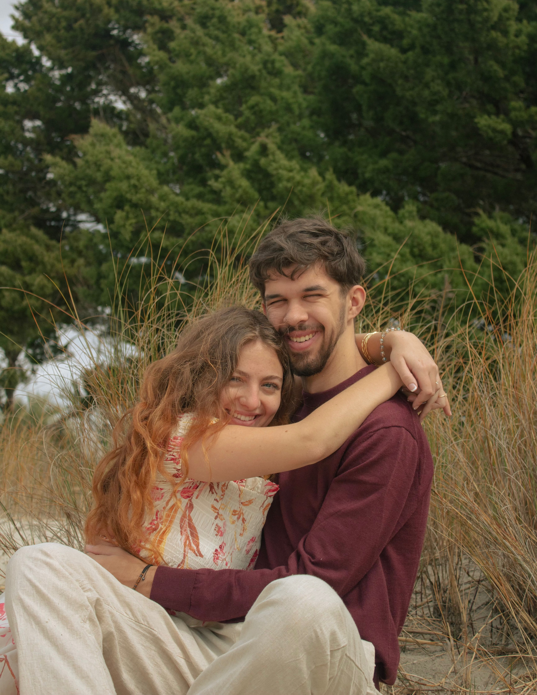

Information
-
Food and Drink
-
There will be various appetizers and snacks available during Coctail Hour including Chips and Dip, Assorted Fruits, and Charcuterie Boards
-
Dinner will consist of Buffet style Tacos from Donkey Taqueria
-
This will be a dry wedding and so no alcohol will be served or permitted, however other drinks including water and pop will be available.
-
Phones during Ceremony
-
We would greatly appreciate that phones be put away during the ceremony so as to be in the moment with us and not distract other guest.
However you are welcomed and encouraged to take as many pictures as you would like during the reception!
-
We will have a photographer there to capture the moments during the ceremony, so please reach out to us if you want pictures of the ceremony.
FAQs
-
What time will the ceremnony and reception be?
-
Please see the Schedule and locations on the Venue page of this website.
-
Where can I stay for the wedding?
-
We are working on reserving a block of rooms at a Hotel in Downtown Holland and will update the website with this location when that information is available.
However you are welcome to stay at whatever hotel you think is best in the area.
-
What Happens if it Rains?
-
In case of light rain there will be umbrellas provided and the wedding will continue as planned.
-
In case of inclement weather (lightning and thunderstorms),
we would be forced to move the all plans indoors. This will force us to limit the number of people that attend the ceremony;
however, everyone invited will, of course, be welcomed to the reception for food and festivities.
-
Please watch the weather as our wedding date approaches to plan accordingly.
We will attempt to notify everyone if the schedule is changed due to the weather